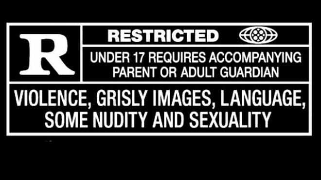

This weekend, I was fortunate to take part in a panel as part of Weeknight Writers with fellow writers, Charli Boné, Charlie Knight, Lex Vranick, and Ken Wolfson to talk about trigger warnings.
There is a lot of discussion about ‘do we need trigger warnings?’ and ‘aren’t they just spoilers?’ in the writing community. Some authors feel providing them will take out a shock twist their novel is building to.
So, let’s start off with why you need them, by talking about my own experience.
Meike: a story on the importance of trigger warnings
I have post-traumatic stress disorder or PTSD from a couple of sources, but most pertinently from witnessing something horrific when I was twenty-one.
Back in 2012, on the twentieth anniversary of the event, a well-meaning friend recommended a new tv series which they described as ‘it’s the new Lord of the Rings’.
Well, folks, that tv show was Game of Thrones. The material, together with the anniversary, was not a good combination. What I saw in episodes really not only was uncomfortable viewing, it disturbed me far deeper than the context of the tv show. I’d be unable to sleep until 2am some nights, because it would upset me.
I was told that I was being too sensitive. But when this came up in therapy, my therapist told me that such violence on screen has a very different impact on someone who has experienced an analogous event.
For such people, it’s opening a door, a memory, which they’d rather keep shut. For people like me, we like to go into a book, a show knowing what’s coming. It’s all about choosing the right time. I can deal with such topics, but I like to essentially armour myself ahead of time.
Content warning? Or trigger warning? Is there a difference?
There’s some confusing about what’s the difference between a content warning or a trigger warning.
To me (and definitions do vary a little from writer to writer) content warnings are anything in the book which a reader might find a little icky. So, it might include language, anything about sex and violence etc. Think about the PG-13/R ratings you have on movies, and the breakdown you get for why a restricted certification has earned that rating.
Trigger warnings are more of a subset of content warnings. If you’ve covered your content warnings, you probably don’t need a specific trigger warning.
To me, trigger warnings are more focused, they’re a subset of content warnings. And they deal with the emotional understanding that the topics could be traumatic for someone who has experienced certain life events, as I had issues with Game of Thrones. Not just disliking it, but it stirs up (triggering) some incredibly upsetting feelings for me.
The two big items under trigger warnings are sexual assault (including rape) and graphic violence (including domestic violence). We’ll talk a little more about other types of trigger warnings below.
In this piece, I’m going to focus more on trigger warnings than on the bigger subject of content warnings. Although I know a lot of people get upset about swear words, for instance, they to me are a content warning, but not a trigger warning.
What topics should I consider trigger warnings for?
So what topics should we consider as triggers? Sexual assault, stalking and rape go without saying.
Violence including graphic descriptions of injury, murder, depictions of war also seem pretty obvious.
But here are some other items you might want to consider
- Depression, suicide, and trauma
- Domestic violence, abusive relationships, and neglect
- Bullying and harassment (not just the sexual kind) –pointed out by Ken Wolfson
- Racism and prejudice, including slavery
- Police brutality
- Depictions of pandemic - this was a new one which Charlie Knight brought up, and reflects many of us have been through trauma, fear, anxiety, and loss during the COVID-19 pandemic
- Harm to animals or children, especially child death
A good example of thinking about triggers, The Melody Harper’s book series has a lot of triggers in the series. But I am currently writing a new fantasy book, and thought I had material circumventing any triggers, but reflecting on it, I’m wrong and have added the following,
- Depictions of racism. In my world, there is a lot of racism against orcs. So as orcs don’t exist, no-one will be upset, right? Wrong! If you’ve experienced racism, it doesn’t matter if it’s aimed at a fictional race, you recognise it for what it is, especially the slurs.
- Depictions of pandemic. I’ve gone for a setting analogous to Restoration Britain, and that includes a Black Death equivalent (the Reaper’s Plague).
Where do I put my warnings?
Essentially, you want your trigger warnings up front. Ideally, you want to make your reader go into a purchase knowing what to expect. I like to think of myself as an author being in partnership with my readers and letting them know what to expect.
So, for Melody Harper’s Moon, if you go to the Amazon page, it says, 'Melody Harper’s Moon… deals with adult themes such as sexuality, sexual assault, suicide, and contains depictions of racism. Subsequently, this book also uses strong language.'
This is more conversational; however, I’ve made it clear to my reader what to expect. [BTW, I consider the topics of sexuality and strong language more content warnings than trigger warnings. With the topic of sexuality, I’m trying to find my audience]
Inside the book itself, I have a warning in the first few pages, right after the dedication. If a reader has selected to get a preview of the first few pages, this will be included.
Charlie Knight mentioned they've seen some content/trigger warnings right at the back... after the fact. To which... NOPE! At least put a reference in those first few pages.
An important item which Charlie Knight brought up in their capacity as an editor – if you’re sending out your work to editors or readers, you really should warn them upfront of your content/triggers. Editors and readers are humans too, and you never know their backlog of life events.
In the past, I’ve always given a high-level view to such people, but on reflection, creating a more explicit list is a better way to move forward.
Should I put my triggers in a list? Or in a detailed author note?
It’s important to understand there’s no right or wrong way to do this. Just by making sure you have singled out your triggers and have it up front with your readers, you’re ahead of the game.
Most of the author panel prefered to have an upfront list.
For myself in the Melody Harper series, I’ve used a conversation upfront about the topics which will be covered. I’ve had a couple of readers say it’s a little too much so early. But to me it goes back to that notion of this being a contract between the author and the reader.
From my perspective, the conversation at first allows readers who are not interested to skip over, but for those who do, I will give some mild spoilers. As someone with PTSD I rarely go into any tv or book blind, but like to know what will happen, so I can make my own decisions about if I'm comfortable with the material.
But essentially for as much as this is my chosen approach for now, I'm always looking for examples from other authors for what works. I think this is one of the few examples where we can plagiarise other works if we realise that would work better for us, as we're all trying to work out the best way to approach this.
What subjects aren’t trigger warnings?
Again – some of this goes to content vs trigger warnings. While I think it’s a good idea to flag up somewhere if your book deals with consensual sex or erotica or has heavy swearing, these to me are not trigger warnings, they’re content warnings.
Bethany, our facilitator, talked about how if a book has no mention of content/trigger warnings, the one-star reviews might help you know if there’s material in the book that people find objectionable.
The problem, brought up by Charlie Knight, not all people’s objections correlate to content/trigger. I have seen a one-star review for Moana, because ‘the film features a demigod, but there is only one-true-god, our lord and saviour…’. Likewise, you’ll often get people objecting to items of people’s identity – a popular one is you’ll hear ‘it’s too woke’.
For myself I’ve had people object to Melody Harper’s Moon for being too diverse with colonists on the Moon being multicultural (check the INTERNATIONAL crew you get on the International Space Station, it happens) but also there being many LGBTQIA characters among Melody Harper’s peers.
It reminds me how Sophie LaBelle did a talk here in Wellington, saying a lot of people complain about her Assigned Male comic strip because, ‘it’s just not realistic that so many trans and enby people would hang out together’.
Objections about religion, sexuality, sexual identity, ethnicity do not belong in a content warning, because people who need those kinds of things are just prejudicial assholes who are hijacking and subverting content/trigger warnings by weaponising their intolerance. They really need to choose to be better human beings instead.
Should I even have these topics in my book at all?
To me, it’s not just about ‘we have these topics’, but that I have made myself a vow to earnestly do justice to these topics and treat them sensitively with humanity and compassion. I have a strong dislike of works and authors who use material like this for cheap drama.
When the MC in my work suffers a sexual assault in book one, that assault remains her story throughout the series. It doesn’t become the motivation for a male character for revenge. Importantly, throughout the rest of the series, that character is dealing with the aftermath of that attack and her recovery. Although my story differs in some details from that of my MC, this journey is my journey in many respects.
I personally dislike it when a book or show depicts such events, and it’s never mentioned again.
Likewise, in book one of the Melody Harper series, two much-loved characters die in an accident, and the grief around them as well as their absence becomes a theme through all the books, but especially in book two.
I, personally, have found the topics to be a challenge, and they’ve pulled a lot from me. I’ve found the writing very therapeutic for my own traumas, but also emotional at times. To feel worthy of covering some of the material, I’ve had to do a lot of research.
It’s worth finding a sensitivity reader if you can find the right one (look to your material for the kind you need). But most of all, write with emotional intelligence and empathy.
If you feel you can’t do this justice, then maybe consider removing those elements.
A final note on life with trauma...
I want to round off and talk a little about life with trauma. This in itself probably deserves an article to itself but it feels important to me to address a little about life with PTSD as someone on the autism spectrum.
I have had a handful of very difficult traumatic events happen to me. Beyond that I have a couple of dozen really uncomfortable memories from my life which make me deeply uncomfortable for a variety of reasons (some of the latter being those which don’t paint me in a favourable light due to being more insensitive than I’d like to admit).
Coupled with this is I have a really good memory, stretching back to when I was two years old. And as mentioned, being autistic creates challenges about not only understanding motivation, but dealing with some emotions.
Some of my traumatic memories play out most days. The best way to describe it, it’s like having a TV playing all the time, but some days you can turn the volume. And others it’s like the volume has come back, but you can’t find the seat cushion the remote has fallen besides (no-one actually goes over and changes the volume on the actual machine).
I use counselling and therapy when things get tough to get on top of it. My trauma can escalate on anniversaries, or if I consume the wrong content and I’m triggered.
As mentioned above, ‘being triggered’ doesn’t mean ‘oh, I don’t like this’. It means your content will gnaw into me. I won’t be able to settle to sleep because I’m revisiting somewhere very unpleasant. And all because I walked into your content not knowing. This is why such warnings are important.
If your content has caused me to feel like this, do you feel I’m going to have a positive relationship with it?
These experiences can make me a little moody and brooding. Which seems fine if you’re Batman, but the rest of us don’t get a hall pass. Ah, it seems like brooding billionaires get a lot more slack.
I’ve been told before at a previous workplace ‘why don’t you smile more when you come into the office’. The walk into work would be typically where I wrestle the most with my trauma, that and those difficult moments when you lay down to go to bed.
Something I have found help and given to me by a therapist. I have a list of happy memories.
Like I say, I have a small set of traumatic and uncomfortable memories. I have over two-hundred happy ones. On a difficult day, I like to revisit the list. It’s important to remember just how many wonderful moments I have, and to just mentally connect with them.
This basic technique can be really helpful to me to feel more positive someday, although it’s not a magic wand.